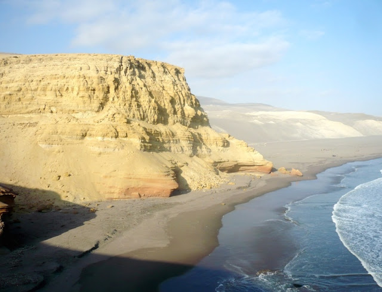
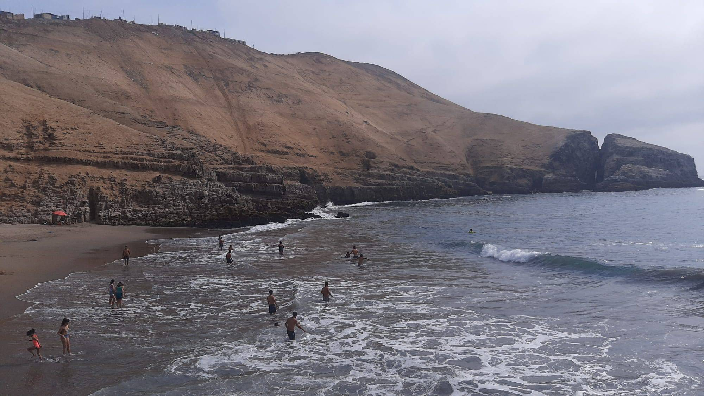
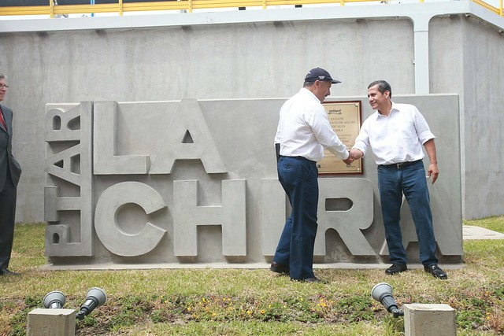
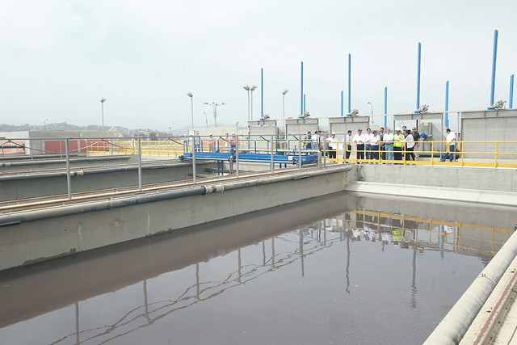
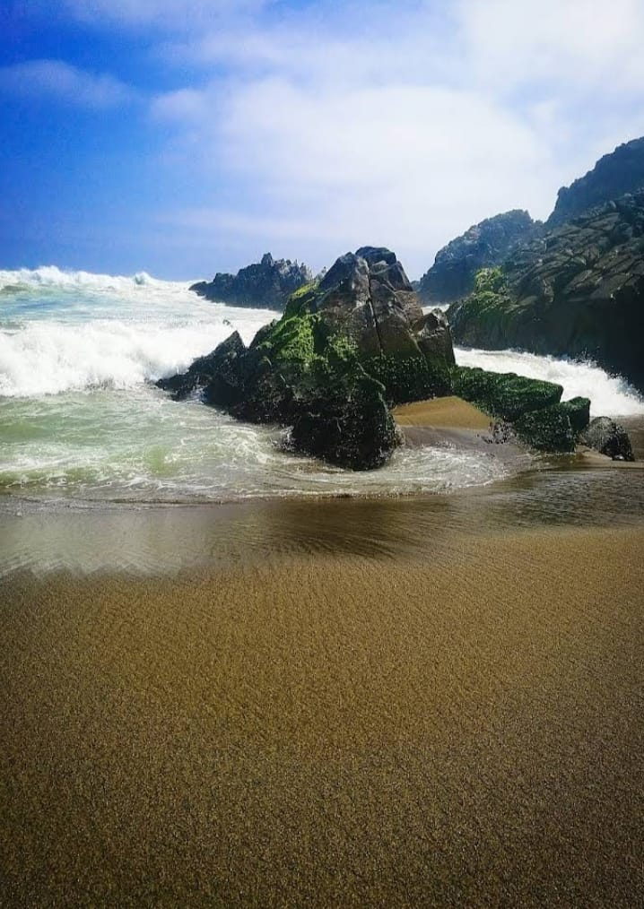
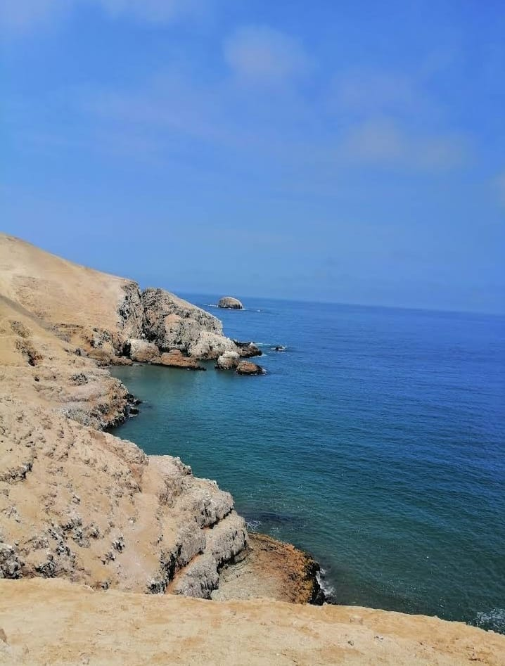
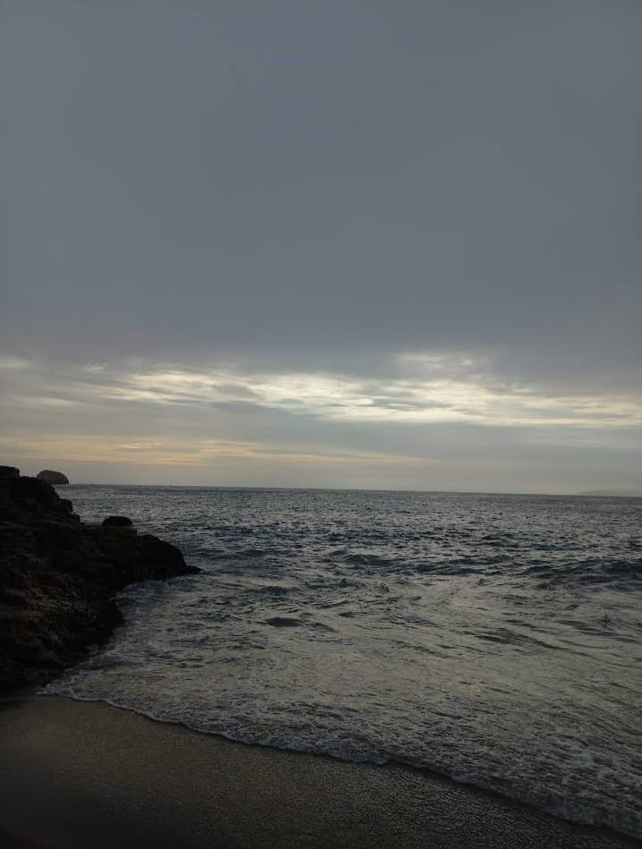
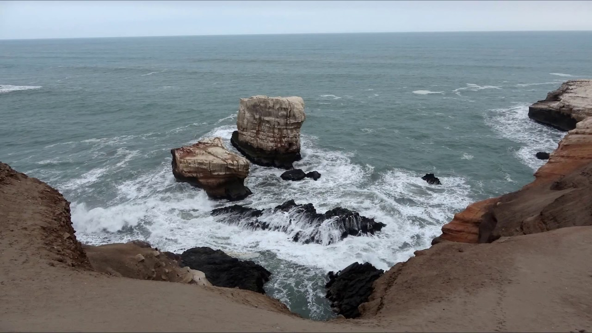

Lugar: Distrito de Chorrillos, Provincia de Lima – Perú
La playa la Chira es una de las más alejadas del circuito de playas de Lima, pues se encuentra al otro lado del Morro Solar. Se caracteriza por ser soleada, pero también húmeda, ello por establecerse en una zona un poco abierta, donde puedes sentir correr desde un fuerte viento o disfrutar de una agradable brisa.
Simplemente es por la poca informacion, ya que lo ultimo que se sabe de esta playa es que justo en ella desembocaba parte del desagüe de Lima; Sin embargo desde hace 9 años que las aguas se encuentran limpias gracias a la Planta de Tratamiento de Aguas Residuales.
Antes de la puesta en marcha de la PTAR de La Chira no existía ningún sistema de depuración, lo que obligaba a verter al mar las aguas residuales sin ningún tipo de tratamiento, causando graves problemas medioambientales, económicos y sanitarios.
Desde su puesta en marcha se han eliminado más de 59 millones de kilos de residuos sólidos que de otra manera hubieran terminado en el mar. Además, se han tratado más de 881 millones de m3 de agua residual, equivalente a más de 352.000 piscinas olímpicas.
La PTAR comprende un túnel de conducción de más de 800 metros de longitud, instalado a más de 23 metros de profundidad y cuenta con un emisario submarino de 3,6 km de longitud para devolver al mar el agua tratada. Y durante estos años, se ha llevado también a cabo una importante labor didáctica y divulgativa, organizando visitas guiadas a grupos de jóvenes y estudiantes de las comunidades vecinas, además de concursos de temática medioambiental en colegios de la zona.
en el siguiente video podemos apreciar como esta actualmente lo que es hoy la playa la chira:
ven y disfrutas de esta hermosa playa
    Para mas información aqui